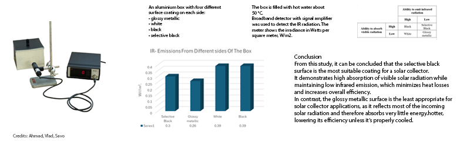
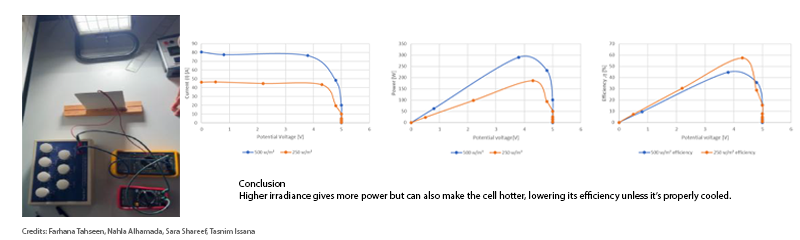
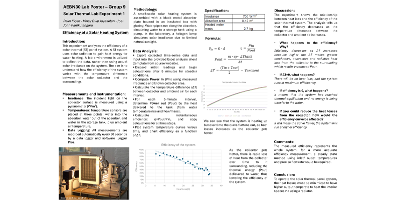

SOLAR ENERGY LAB EXPERIMENTS
This course ran seven lab experiments across solar thermal and photovoltaic systems, each isolating one variable that governs how well a building-integrated solar system performs. Glass transmission, conductive/convective/radiative heat loss, absorber surface coatings, and PV panel behaviour under changing irradiance, load and shading were each tested on dedicated lab rigs and analysed against the underlying physics.
The sections below cover each experiment in turn: what was measured, how the rig was set up, and what the results showed.

SOLAR THERMAL 1 — EFFICIENCY OF A SOLAR HEATING SYSTEM
This experiment analysed how the efficiency of a solar thermal (ST) panel system changes with the temperature difference between the collector and its surroundings. A black metal absorber plate inside an insulated glazed box circulated water to a storage tank via a pump, with a halogen lamp simulating solar irradiance at 700 W/m² and a pyranometer plus temperature sensors logging data automatically every 30 seconds. Efficiency was calculated from η = Pout/Pin, with Pout driven by the mass flow and temperature rise of the water and Pin set by the irradiance and absorber area (0.12 m², heating 2.7 kg of water).
Efficiency fell as the temperature difference (ΔT) between the absorber and ambient air grew, since greater ΔT means greater conductive, convective and radiative heat loss reducing useful output; at ΔT = 0 there would be no heat loss and maximum efficiency, while efficiency of 0 would mean the system had reached thermal equilibrium with no further energy transferred to the water. Minimising heat losses is therefore key to reaching the higher output temperatures needed to usefully heat interior spaces via a radiator.
SOLAR THERMAL 2 — HEAT LOSSES BY CONDUCTION, CONVECTION & RADIATION
Four identical cylinders, each filled with the same amount of hot water, were used to isolate the three heat loss mechanisms: one left black and bare, one glossy metallic, one with a plastic air gap, and one black cylinder wrapped in 1.5 cm of Styrofoam insulation. Temperature was logged every few seconds for 30 minutes via Logger Pro across all four setups in parallel.
The bare black cylinder lost heat fastest, confirming that dark, matte surfaces radiate strongly; the glossy metallic surface's reflective properties cut radiative loss noticeably, consistent with its lower emissivity. The air gap reduced convective loss by shielding the surface from ambient air movement, and the Styrofoam insulation was most effective of all at minimising conductive loss. Overall, heat loss depends heavily on both surface finish and insulation, and each mechanism can be addressed independently through material choice.
SOLAR THERMAL 3 — PROPERTIES OF ABSORBER SURFACES

An aluminium box was fitted with four different surface coatings — glossy metallic, white, black and selective black — on its four sides, filled with hot water at roughly 50°C so every surface reached the same temperature, and an IR broadband detector with signal amplifier measured the infrared radiation emitted from each side. Because all four surfaces were at the same temperature, any difference in measured emission came down purely to surface properties, not temperature.
Selective black and glossy metallic both emitted the least IR (0.30 and 0.26 W/m² respectively), while plain white and plain black emitted the most (both 0.39 W/m²) — but combined with visible-light absorption, selective black stood out as the one surface that is both high-absorbing and low-emitting. That combination makes selective black the most suitable coating for a solar collector, while glossy metallic — despite its low emission — absorbs very little incoming solar radiation in the first place, making it the least appropriate choice.
PV 1 — CHARACTERISTICS OF A PV PANEL

A PV panel connected to a variable resistor, current/voltage probes and a pyranometer was tested under two controlled irradiance levels from a halogen lamp — 250 W/m² and 500 W/m² — to find how current, voltage, power and efficiency shift with circuit resistance, and to locate the panel's maximum power point (MPP) at each level. As resistance was lowered, current rose until it plateaued at the MPP: about 288 W under the higher irradiance and about 180 W under the lower one, with the voltage at the MPP staying nearly constant across both cases.
Higher irradiance delivered more current — more photons hitting the cell — and so more power, but efficiency actually ran lower at high irradiance and higher at low irradiance, since the extra energy also heats the cell and hotter cells convert less of the incoming light to electricity. In short, more sunlight means more power, but only if the extra heat is managed.
PV 2 — PV SYSTEM PERFORMANCE WITH A RECHARGEABLE BATTERY
A PV panel was wired to four light bulbs in parallel, with three ammeters tracking current from the panel, to the bulbs, and to or from a rechargeable battery. Without the battery, voltage sagged from 17.7 V with one bulb to 11.2 V with four, power peaked at roughly 2.2 W with three bulbs and then fell, and bulb brightness swung between dim and very bright as voltage moved around.
Adding the battery kept voltage stable between 12.8 V and 14 V regardless of how many bulbs were connected, since the battery supplied extra current when demand was high and absorbed the excess when demand was low — power stayed even even with all four bulbs on, and brightness stayed consistent, if not the very highest. A PV panel paired with a battery behaves like a small "virtual grid": it stores energy for later use, stabilises voltage and appliance performance, and increases reliability when load or sunlight fluctuates, in much the same way a grid connection would.
PV 3 — SHADING EFFECT ON PV PANELS AND ARRAYS
A halogen lamp and reflector lit a PV panel board wired to a voltmeter, ammeter and variable resistor, tested under three connection types — a single panel, two panels in parallel, and two panels in series — each run through four shading scenarios: no shading, half a cell shaded, half the panel shaded, and one full cell shaded. IV curves were recorded for every combination to see how connection type interacts with partial shading.
The parallel connection gave up some power output as current increased but tolerated shading well, since each panel kept operating independently of the other. The series connection reached the highest power output overall thanks to its higher combined voltage, but was far more sensitive to shading — particularly when a whole cell was shaded — because the panels depend on each other in series; a bypass diode would help limit that penalty.
GLASS TRANSMISSION — EFFECT OF INCIDENCE ANGLE
Glass affects both facade thermal comfort and PV performance, so this experiment measured how much light actually gets through as the angle of incidence changes. A light source and sensor rig, run through Avasoft, recorded absolute irradiance across the visible spectrum (380–695 nm) at nine incidence angles from 0° to 80° in 10° steps. Irradiance stayed fairly stable from 0° to 60°, then dropped sharply beyond 60° as Fresnel reflection and polarisation effects took over — while in the 400–680 nm band, a few of the higher angles showed slightly greater transmission at specific wavelengths, peaking around 570 nm.
Across the full spectrum, total irradiance was similar for every angle up to 60°, with the biggest fall-off only appearing beyond that point. The lowest incidence angle, 0°, gave the highest overall transmission — perpendicular entry simply minimises reflection — making 0° the optimal incidence angle for maximising light transmission through glass.
COURSE TAKEAWAYS
- Loss minimization dictates overall performance. Minimizing parasitic heat and optical losses (Fresnel reflection, convection, infrared re-radiation, thermal degradation) consistently defines system efficiency.
- Controlled experiments isolate physical drivers. Utilizing indoor halogen setups and calibrated detectors allowed clean decoupling of variables that are otherwise coupled in outdoor environments.
- Wiring configuration represents an optimization trade-off. Series wiring unlocks higher combined voltages but incurs severe shading penalties, whereas parallel wiring provides superior operational resilience.
- Storage creates grid-like operational stability. Integrating battery storage regulates voltage swings and load fluctuations, decoupling instantaneous solar generation from demand.
- Selective surface properties maximize net capture. Combining high visible solar absorptance with low infrared thermal emissivity outperforms standard single-metric coatings.
